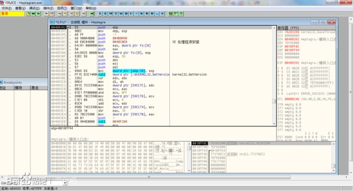
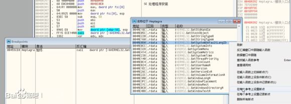
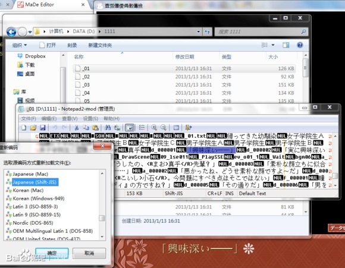
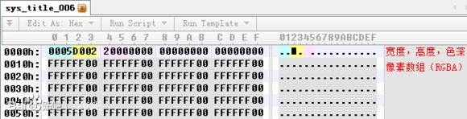
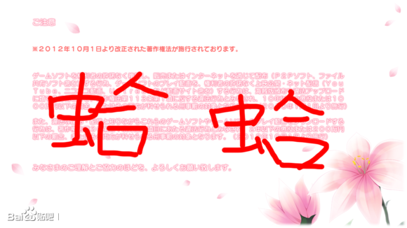
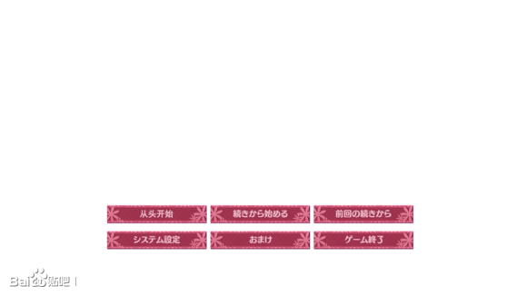
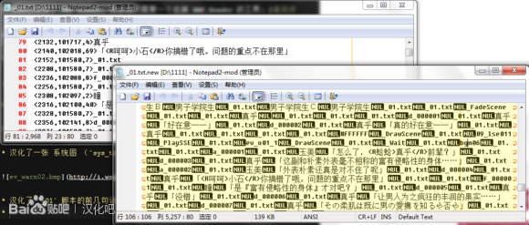
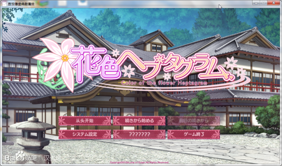
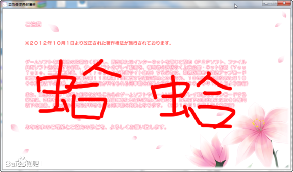

囧，CK 这边的编辑器是 WindCode，也不能直接插入 HTML，只能大概排一下版了。对排版和格式有高要求的同学请看
这里。

转载请注明出处。
Ever tried. Ever failed.
No matter. Try again.
Fail again. Fail better.
一直想写一篇面向新手的 Galgame 汉化教程，但一直苦于没有时间。现在终于考完了试，申请也告一段落，这才抽了点时间来写这篇文。还有，工口你认真学，今后杏爱会的程序就看你的了。
本教程假设你已经满足以下条件：
- 玩过 Galgame，了解一般 Galgame 资源存储的方式
- 会一门编程语言，VB6 和 JavaScript 等前端语言除外
- 能看懂用其它编程语言写出的源代码，此处特指用 C++
- 能看懂汇编，51 单片机的汇编语言就行
- 懂数据结构
- 知道什么是字符编码
- 英语水平还说得过去
- 懂一点儿日语
本教程中使用的名词：
- 封包：指游戏的资源文件在游戏安装目录下的保存形式
- 脚本：含有二进制控制符和纯文本的文件
- 文本：从脚本中提取，人类能够读懂的文本文件
首先来看看破解都要干啥：
- 解开游戏的封包文件
- 从提取出的脚本中提取出文本
- 从提取出的脚本中提取出图片
- 把翻译好的文本写回到脚本里
- 把新的图片和脚本放回到封包里
- 修改游戏主程序，使之能正常读取中文
好，让我们开始吧。
1. 准备我们以方糖社的《
花色ヘプタグラム》为例进行实战。不过在开始之前，你需要准备几种工具：
工具的用法在此不再赘述，请自行谷歌。
安装游戏后打开游戏的主目录，你会发现这些文件（已略去部分无用文件）：
2012/09/26 16:33 643 autoload.arc
2012/09/26 16:33 1,817,109 data01000.arc
2012/09/26 16:33 876,414,725 data02000.arc
2012/09/26 16:33 654,502,744 data02001.arc
2012/09/26 16:33 1,179,169,979 data02010.arc
2012/09/26 16:33 12,594,853 data02050.arc
2012/09/26 16:33 299,065,396 data02100.arc
2012/09/26 16:33 21,874,416 data02950.arc
2012/09/26 16:33 14,331,692 data03000.arc
2012/09/26 16:33 922,747,352 data04000.arc
2012/09/26 16:33 75,902,855 data05000.arc
2012/09/26 16:33 860,160 Heptagram.exe
2012/09/26 16:33 34,148,877 sysgrp.arc
2012/09/26 16:33 290,498 sysprg.arc
2012/09/26 16:33 3,702,778 syssnd.arc
2012/09/26 16:33 2,825 system.arc
很明显，Heptagram.exe 是游戏的主程序，*.arc是游戏的封包文件。接下来，我们开始正式的流程。
2. 破解
2.1. 运行破解
双击 Heptagram.exe 来测试一下，发现没有出现游戏主窗口；而用 AppLocate 工具加载后却能够正常运行。这说明开发商在游戏中进行了某种检查，以防止游戏在日本日外的国家运行（原因大家都知道，而且还有家中二公司把这点做到了极致）。
好，让我们想一想，如何得到当前操作系统的区域信息？
透露一下，BGI 引擎使用 GetSystemDefaultLangID 来确定当前操作系统的区域。
运行 OllyDbg，载入 Heptagram.exe，如图。
按下 CTRL + N，在打开的 API 列表中找到 GetSystemDefaultLangID，右键选择“在每个参考上设置断点”。如图。
双击 Breakpoints 窗口中的项，来到 GetSystemDefaultLangID 的调用位置：
00455CE0 /$ FF15 D0E04A00 call dword ptr [<&KERNEL32.GetSystemD>; [GetSystemDefaultLangID
00455CE6 |. 8B5424 04 mov edx, dword ptr [esp+4]
00455CEA |. 25 FF030000 and eax, 3FF
00455CEF |. 33C9 xor ecx, ecx
00455CF1 |. 3BC2 cmp eax, edx
00455CF3 |. 0F94C1 sete cl
00455CF6 |. 8BC1 mov eax, ecx
00455CF8 \. C3 retn
在简体中文环境下， GetSystemDefaultLangID 返回值是 0x804，而在日语环境下，返回值是 0x411。那么怎么改？很简单，直接把 0x411 写入返回值的寄存器就行了。这样，无论是什么语言的系统，都会被认为是日语系统。
双击 00455CE0 这一行，把汇编改为 mov eax, 411。改好后的这部分代码如下所示：
00455CE0 B8 11040000 mov eax, 411
00455CE5 90 nop ;修改后的代码比原先的要短，所以剩余的部分会用 nop 补齐
00455CE6 |. 8B5424 04 mov edx, dword ptr [esp+4]
00455CEA |. 25 FF030000 and eax, 3FF
00455CEF |. 33C9 xor ecx, ecx
00455CF1 |. 3BC2 cmp eax, edx
00455CF3 |. 0F94C1 sete cl
00455CF6 |. 8BC1 mov eax, ecx
00455CF8 \. C3 retn
改好之后，在 CPU 窗口右键，复制到可执行文件 -> 所有修改 -> 全部复制，再在弹出的窗口中右键，保存文件，命名为 Heptagram_NoCheck.exe，完成后退出 OllyDbg。
接下来找到刚保存的 Heptagram_NoCheck.exe，双击运行，游戏界面是不是出来了？
2.2. 游戏脚本
2.2.1. 解包
这一步可以说是整个汉化过程中最简单的了（当然，这是建立在前辈们的辛苦分析上的）：用老毛子出品的 AnimED 即可（不推荐使用 Crass）。
从 BGI 汉化经验来看，脚本文件一般都保存在前几个封包中（本游戏的脚本就在 data01000.arc 中）。如果你找不到，你可以把封包逐一拖到 ExtractData 窗口中观察。单个脚本的大小一般不会超过 200KB。
使用 AnimED 解开 data01000.arc ，拿到脚本（同样，略去了部分文件）：
2013/01/13 16:31 64,740 a01
2013/01/13 16:31 72,838 a02
2013/01/13 16:31 76,598 a03
2013/01/13 16:31 6,433 b06_3
2013/01/13 16:31 47,365 b07_1
2013/01/13 16:31 71,012 b07_2
2013/01/13 16:31 92,156 c06_2
2013/01/13 16:31 77,374 d09
2013/01/13 16:31 79,352 d10_1
2013/01/13 16:31 1,712 main
2013/01/13 16:31 3,150 s_ci_02
2013/01/13 16:31 110,513 Yuzuriha
2013/01/13 16:31 128,763 _01
2013/01/13 16:31 93,819 _02
2013/01/13 16:31 154,264 _03
2013/01/13 16:31 100,339 _07
2013/01/13 16:31 268,696 _08
2013/01/13 16:31 28,475 _10_2
打开准备好的 Notepad2，载入其中的 _01
文件，然后按下 F8
，选择 Japanese (Shift-JIS)
。你会发现，这个文件就是游戏的第一章：

2.2.2. 二进制脚本分析在打开的 _01 文件中，你可以看到不可读的二进制代码和可读的文本混在一起。接下来，打开你的十六进制编辑器，载入_01 文件。

如图所示，BGI 脚本分为四部分：
- 头部 Magic：用于校验该文件的类型
- 脚本头部：定义了该脚本所需的全局变量
- 指令部分：控制游戏的流程
- 文本列表：我们最感兴趣的东西
在游戏执行中，引擎不断地读取指令部分中的指令，形成了游戏的时间线。 可以看出，0x00000003 之后的四字节（DWORD）和下面文本列表中字符串 _01.txt （起始地址为 0x18D1C）有关：
0x18D1C = 0x1C (MAGIC 长度) + 0x34 (头部长度) + 0x18CCC (0x00000003 之后的四字节)
如果你不放心，可以再找几句话计算看看。
那么，思路就确定下来了：
逐个读取所有的 0x00000003，把之后的四字节作为地址，修正后用来查找目标处的字符串。也就是
String = GetStringAt(GetUnsignedIntAt(AddressOfAny(0x03) + 4) + LengthOf(magic) + LengthOf(header))
接下来，用你最擅长的编程语言写一个
提取文本的工具吧。
2.3. 图片提取与转化
BGI 引擎的图片有两种格式：标准 BMP/PNG 和去掉
文件头的 BMP。前者用于 CG 和立绘，后者用于系统图片（sysgrp.arc中的图片文件）。
注意：部分图片的像素排序是反转的，保存时也要保持反转排序（在 PS 的保存窗口中勾选翻转行序）
注意2：如果图片含有 Alpha 通道，那么 Alpha 通道也要修！2.3.1. 标准 BMP/PNG 文件
这些文件很好判断。对于 BMP 文件，文件头部总是 BM 两个字母；而对于 PNG 格式，文件头总是 {0x89, 0x50, 0x4E, 0x47}（写成中文的话就是 塒NG）。给解出来的文件添加相应后缀，用 Photoshop 打开即可。
2.3.2. 系统图片
让我们再次祭出十六进制编辑器。
如图，文件的钱六个字节分别是图片宽度，图片高度和色深。可以看出，sys_title_006 图片是一个 1280 * 720 的 32 位图片。
再次使用你最拿手的编程语言，写一个小程序来修复 BMP 文件头吧：
请阅读 BeginBuildBMP 函数的代码。
至此，资源破解结束。
3. 资源回封
3.1. 游戏脚本
脚本的回封很简单，
照着提取工具写一个对应的逆运算就行了。注意，新文件中的汉字必须是 GBK 编码。
3.2. 图片
3.2.1. 标准图片
去掉后缀就行。
3.2.2. 系统图片
刚刚我们添加了 BMP Header，现在我们需要一个去掉 BMP Header 的工具：
请阅读 BeginBuildResource 函数的代码。
4. 测试运行
上面，我
- “汉化”了一张 CG （ev_warn02 来自 data02010.arc）：
- 汉化了一张 系统图 （sys_title_006 来自 sysgrp.arc）：
把 ev_warn02 的后缀去掉，把 sys_title_006 的文件头去掉，把文本回写到 _01 中，生成新文件再重新命名为 _01。
完成后，把三个文件重命名为原本的名字，复制到游戏目录下。双击游戏，运行。

图片很正常，能用。可是脚本就没这么方便了：
出现了乱码。
这就不得不说字符编码和边界检查了。点击
这里和
这里，仔细阅读肠姐姐的文章。
BGI 引擎中存在多处校验边界的代码，具体可以通过 OllyDbg 查找（CTRL+L）cmp al, 0A0 来定位（《花色ヘプタグラム》中只有两处）。
其它需要修改的地方：
- CreateFontA 的 fdwCharSet 参数：改为 86 （其他游戏可能会有 CreateFontIndirectA 函数，后者要麻烦一些）
- MultiByteToWideChar 的 Charset 参数：改为 3A8
- cmp eax, 0EF40 ; 改为 0FE40
- cmp ebx, 0EF40 ; 改为 0FE40
- cmp ebx, 8140 ; 8140 是 Shift-JIS 编码中的全角空格，所以此处应改为 0A1A1 （GBK 的全角空格）
修改后保存主程序，再次运行，一切正常。
5. 后续工作
5.1. 字体
用十六进制编辑器打开刚刚运行成功的主程序，把所有ＭＳ 明朝（俵俽 柧挬），ＭＳ ゴシック（俵俽 僑僔僢僋），MS Mincho，MS Gothic 改为黑体，或 SimHei，别忘了把空余的字节全填上 0x00。
5.2. 窗口标题
从 system.arc 中得到 ipl._bp，用十六进制编辑器修改字符串。
5.3. （按需）人名乱码，下一句提示符乱码，方括号乱码
从 sysprg.arc 中提取相应的 ._bp 文件，用十六进制编辑器修改。下面的是完成品，补丁质量：
5.4. 补丁的注意事项
既然 BGI 不用封包就能读取汉化后的文件，那么在发补丁时怎么办？打补丁之后，游戏目录不得一下子多出几百个文件么？孩子，你需要
MoleBox。
6. 接下来？
如果你觉得自己需要再次学习基本知识，请把
这里所有回复大于 2 的主题帖读完。
如果你觉得自己能够挑战更高难度的破解，请点
这里。
如果你有任何疑问，请留言。
[ 此帖被amemiya在2014-05-15 23:49重新编辑 ]